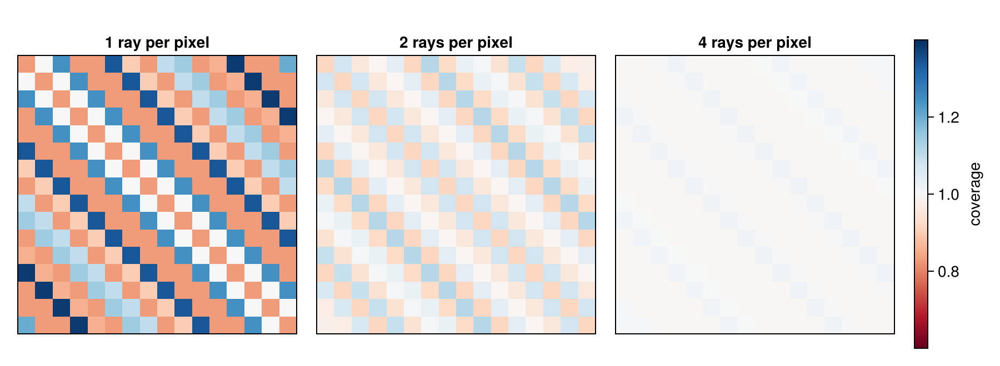

Siddon's Method
A projector computes line integrals of an image along rays. For an image of voxels, each with a constant value, the line integral along a ray is a weighted sum: every voxel the ray passes through contributes its value times the length of the ray inside it,
\[y_i = \sum_j a_{ij} x_j, \qquad a_{ij} = \text{length of ray } i \text{ in voxel } j.\]
The weights $a_{ij}$ form the system matrix. Although most of its entries are zero, it is too large to store: with a 256³ volume and 10⁷ rays, each crossing a few hundred voxels, it has billions of nonzero entries, tens of gigabytes. Projectors therefore compute the weights of a ray on the fly, every time they need them. Siddon's method computes them exactly.
using CTOperatorsThe idea
Siddon (1985) does not look at the voxels but at the planes between them: three sets of equally spaced parallel planes, one per axis. Where a ray crosses these planes is a simple computation per axis, and between two consecutive crossings the ray lies inside a single voxel. The intersection lengths are the distances between consecutive crossings, the voxels follow from the order of the crossings.
Siddon computed all crossings, sorted them and then found the voxel of every segment. Jacobs et al. (1998) avoid both: starting from the voxel where the ray enters, they take the nearest next crossing of the three axes, which says which axis the ray crosses next, and step that axis's voxel index by one. Every step costs a few additions and comparisons, and a ray through a volume of n³ voxels takes about 3n steps.
In the figure a ray crosses a 2D image. Orange circles mark where the ray crosses the lines x = const between pixels, red diamonds the lines y = const; the pixels are colored by the length of the ray inside them. The slider rotates and shifts the ray.
The weights in the figure come from the package itself: the back projection of the value 1 along a single ray puts its intersection lengths into the pixels. Rounded to two digits, first index x (rows of the printout), second index y:
image = ImageGeom(; dims=(8, 8), deltas=(1.0, 1.0))
ray = RayList([-6.0; -2.0; 0.0;;], [6.0; 3.0; 0.0;;])
weights = reshape(adjoint(SiddonProjector(image, ray; eltype=Float64)) * [1.0], 8, 8)
round.(weights; digits=2)8×8 Matrix{Float64}:
0.0 0.0 0.43 0.65 0.0 0.0 0.0 0.0
0.0 0.0 0.0 1.08 0.0 0.0 0.0 0.0
0.0 0.0 0.0 0.87 0.22 0.0 0.0 0.0
0.0 0.0 0.0 0.0 1.08 0.0 0.0 0.0
0.0 0.0 0.0 0.0 1.08 0.0 0.0 0.0
0.0 0.0 0.0 0.0 0.22 0.87 0.0 0.0
0.0 0.0 0.0 0.0 0.0 1.08 0.0 0.0
0.0 0.0 0.0 0.0 0.0 0.65 0.43 0.0Properties
- Exact for voxel images. The weights are the exact lengths, so the projection of an object made of whole voxels equals its analytic line integrals (the test suite checks this against ImagePhantoms.jl). For smooth objects the error is that of representing the object by voxels.
- Exact adjoint. The back projection uses the same weights, so it is exactly the transpose of the forward projection, as iterative solvers require.
- Any geometry. The method only needs the start and end point of each ray: ray lists, cone and parallel beam and any trajectory work the same way.
Coverage of the voxels
Siddon's method is ray-driven: it follows individual rays, and the detector cells are points. Whether a voxel is hit by many or by few rays then depends on how the rays fall onto the voxel grid. The figure shows, for one parallel-beam view at 45°, the summed lengths of all rays in every pixel (scaled by the cell size, so that even coverage is 1). With one ray per pixel the coverage varies between about 0.83 and 1.34, in a regular pattern; more rays per pixel even it out.

In an iterative reconstruction this pattern can appear as a checkerboard in the image (De Man & Basu 2004 describe the effect). Remedies are more rays than voxels (finer detector sampling), Joseph's Method, whose interpolation evens out the coverage at most angles, or projectors that integrate over the detector cells, such as distance-driven or separable-footprint projectors.
Implementation
- The ray is traversed in voxel coordinates (see Coordinates and Conventions), so voxels of any size, also anisotropic or with flipped axes, need no special cases.
- The forward projection runs one thread per ray and sums the weighted voxel values. The back projection follows the same rays and adds the weighted value of the ray to every voxel it visits with an atomic addition, because rays of different threads meet in the same voxels.
- A ray that lies exactly in a plane between two voxels is ambiguous: its line integral could be taken from either side. Siddon's method takes the side that the rounding gives, which may differ between Float32 and Float64 or between devices.
- How the rays are distributed over the threads of a GPU is not part of the method; see Workgroups and Ray Order on GPUs.
References
- R. L. Siddon, "Fast calculation of the exact radiological path for a three-dimensional CT array", Med. Phys. 12(2), 252–255, 1985.
- F. Jacobs, E. Sundermann, B. De Sutter, M. Christiaens, I. Lemahieu, "A fast algorithm to calculate the exact radiological path through a pixel or voxel space", J. Comput. Inf. Technol. 6(1), 89–94, 1998.
- B. De Man, S. Basu, "Distance-driven projection and backprojection in three dimensions", Phys. Med. Biol. 49(11), 2463–2475, 2004.
This page was generated using Literate.jl.